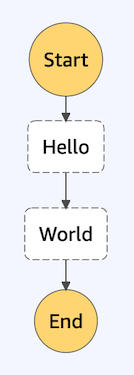

Case Study
1 Introduction
1.1 What is Maestro?
The rise of serverless architectures and FaaS offerings such as AWS Lambda has revolutionized how companies are developing modern apps. The need for an orchestration layer over these architectures has brought about services such as AWS Step Functions. However, deploying apps that use Step Functions can be tedious and error-prone. Maestro prioritizes speed and developer productivity by automating this process so that the developer’s focus stays on developing their application's business logic.
Maestro is an open-source easy-to-use framework for quickly bootstrapping, deploying, and rapidly iterating serverless orchestration (hence the name) workflows and applications using Node.js® and AWS Step Functions.
Maestro makes it easy to get started developing serverless orchestration workflows. Plus, deploying is a breeze with Maestro. Since Maestro also offers frictionless teardown, re-deploying is as simple as tearing down and deploying again. Using Maestro aids development not only in the initial phase of a project but throughout maintaining and iterating on a project.
2 Serverless
2.1 So You’ve Decided to Go Serverless
Serverless is a computational architecture model where applications are deployed on servers that are managed in the cloud by a third party. Not provisioning servers locally but outsourcing management of computational resources reduces technical overhead. Energy otherwise expended on managing infrastructure can be reallocated to development.
Companies who’ve chosen to go serverless include those whose profit center lays outside of tech. With a serverless infrastructure, they can maintain a smaller technical staff while still providing resilient technology that their business purposes require. They benefit from low development overhead with minimum DevOps and maintenance while building additional features. Low overhead allows for quickly iterating on workflows [1].
A company may value the low technical overhead of a serverless architecture enough to sacrifice overall control of their infrastructure. The lack of control may pose challenges regarding performing local testing, execution caps dictated by the cloud provider, and limited tools provided by the cloud provider. Further, since serverless is a relatively new construct, a lack of established best practices and clarity in development impede productivity [2].
Despite the challenges, many companies continue to explore and develop in the serverless environment making cloud providers more and more popular. The most broadly adopted cloud service provider at the time of this writing is Amazon Web Services (AWS), so the focus of further discussion will be AWS [3].
2.2 FaaS
There’s some ambiguity around this fairly new word “serverless”, and it broadly refers to cloud offerings that do not require managing servers. Applications deployed on external, unowned servers take advantage of a serverless infrastructure. However, the subset of serverless known as Function as a Service (FaaS) is so prevalent that it is often conflated with the term serverless itself [4].
FaaS makes use of application code comprising functions deployed on serverless containers managed by a cloud provider. The distinction with FaaS is that said containers are provisioned in response to events. Spinning up only when needed allows an organization to pay only for actual use of the resources which can lead to a reduction in cost. Also, flexible provisioning facilitates scaling up and down according to demand.
From here on, the consideration will be FaaS focused when mentioning serverless; thereby, suiting how almost 60% of developers think about serverless.

2.3 AWS Lambda
Amazon’s FaaS offering is known as AWS Lambda. AWS Lambdas are small applications or ‘functions’ of up to 250 MB deployed on containers that support runtimes in seven languages [5]. The Lambdas can be invoked by many AWS services including other Lambdas. They are ephemeral in that they have a limited execution time maxing out at 15 minutes, and any state associated with the execution is lost.
When invoked, a container is “spun up” when needed which has historically taken hundreds of milliseconds for a container that hasn’t already been operating. Hence the notion of a “cold start” meaning that the first invocation of a given Lambda required a period of extended latency. AWS has recently offered a feature to address this “cold start” through a sub 100 millisecond spin up of certain function containers. The drawback of this new feature is an added cost, so it doesn’t seem to be a great fit for use with all Lambdas in a workflow since users of AWS Lambda are already charged for execution time in 100 ms increments.
2.4 Serverless Patterns
Serverless development is a new area with AWS Lambda having been released just some six years before this writing. In the short time that’s transpired since their release, there have not yet been developed a set of broadly accepted best practices. This can be challenging since new practitioners must seemingly start from scratch when it comes to creating an application in this paradigm.
Taking into consideration there are not yet many strict best practices for working in the field, how can growing interest in development in the area be reconciled? Efforts to facilitate development is evidenced by significant research in serverless. One research paper that surveyed the serverless landscape found more than 200 academic papers written on serverless technology between 2017 and 2019 [6]. Additionally, practitioners write blogs and develop other sources describing their experiences of working with Lambda daily.
Common patterns can be derived from continual work with serverless architectures. Patterns for working with serverless can be grouped into five categories:
- Availability
- Event Management
- Communication
- Authorization
- Orchestration
‘Availability’ patterns ensure that a service is available when needed. Lambdas can be unavailable due to a number of limitations. For example, due to cold start, a Lambda may initially be unavailable; a request that demands a quick response may not receive it. Another limitation that affects availability is the 15-minute execution cap meaning that a Lambda may be unavailable after being terminated. Also, incorporating other services introduces other sets of limitations regarding availability.
Another group of patterns deals with communication problems related to an event. The responsibilities of ‘Event management’ patterns include but are not limited to dealing with messages that need to be communicated, invoking services in response to events, and monitoring whether a scheduled event occurs.
A related grouping of patterns addresses problems that pertain to communication between Lambdas functions. There is bleed over from the ‘Event Management’ patterns as some ‘Communication’ patterns also deal with events and vice versa. The fact that such a blurry distinction occurs, substantiates the lack of clear standards in serverless, on the one hand. On the other hand, the classification of a given pattern may be grouped according to divergent criteria depending on the exact architecture of a practitioner.
The ‘Authorization’ grouping of patterns deals with issues related to user authorization. Information about a request may be utilized in the processing of some other information to authorize the user. The pattern may use multiple functions for processing or blocking access until authorization is achieved.
The focus of the Maestro team is the grouping of serverless patterns around ‘Orchestration’.
3 Orchestration
Once an application moves beyond a single Lambda, a developer is required to orchestrate multiple serverless functions such that they execute in a meaningful way. Serverless orchestration, in a nutshell, is the act of managing the workflow and communication between multiple serverless services.
3.1 Orchestration Patterns
A Lambda may execute and require the subsequent execution of another service which may be parallel executions. A Lambda somewhere in the execution chain may require a particular input. Later, an output may require processing. At some point, some asynchronicity may be required to allow for some series of executions to perform tasks while a long-running function executes. At yet another stage, a single synchronous execution may require every Lambda in the workflow to wait until it terminates.
Certainly there are multiple considerations related to serverless orchestration, and patterns have arisen for addressing some common concerns. However, imagining what orchestration actually looks like in the wild without a concrete example may be difficult. To visualize what real-world orchestration may look like, consider the following hypothetical situation: the sole developer in a startup is tasked with creating an internal tool for provisioning a resource per managerial approval.
A request comes into the manager who has the option of accepting or denying the request. If the manager approves, the resource is provisioned and the requester is granted access. If the manager denies, the requester is notified of the denial. The savvy developer may break down the problem into smaller components and generate a workflow:

The workflow can be implemented with each component representing an individual AWS Lambda. Ideally, each component would do one simple thing in isolation. Yet, a Lambda couldn’t fulfill its role in a meaningful way if it were to execute arbitrarily, independent of the rest of the workflow. The work of each Lambda must be orchestrated for the application to execute in a meaningful sequence.
What factors must be considered for the workflow to proceed seamlessly?
Presumably, the ‘Manager’ Lambda would receive an input indicating which type of resource to provision and for whom. How would the ‘Manager’ respond if the input was somehow malformed perhaps indicating a non-existing resource type or non-existent ‘Requester’? An error could occur leading to the ‘Manager’ failing. Unhandled, the failure could send the entire workflow to a screeching halt.

Some form of error handling could prevent such an unfortunate occurrence, but should the ‘Manager’ validate its input? It would be reasonable that a component performing a single responsibility of validating input could both provide a clear separation of concerns and prevent the ‘Manager’ from failing.
A common orchestration pattern known as the ‘Proxy Lambda’ could play the pivotal role of invoking the ‘Manager’ with proper input. The ‘Proxy Lambda’ nestles between two Lambdas and invokes the second when appropriate. In this case, it handles a potential invalid input error.

Thereafter, the choice exists between approving and denying, which amounts to simple branching. If the decision is the main concern of the ‘Manager’, what’s an appropriate way of branching?

Another pattern presents itself in this scenario: the ‘Orchestrator Lambda’. The ‘Orchestrator Lambda’ plays the role of directing orchestration between multiple Lambdas. Since the ‘Manager’ Lambda is capable of invoking other Lambdas, it can handle branching.
Since it’s unlikely there will be an error at this stage, writing additional business logic is all that is required. Despite the 15-minute execution cap of a Lambda, as long as the ‘Manager’ doesn’t take long to make the decision, there shouldn’t be an issue. The ‘Manager’ is transformed to the affectionately named ‘Fat Manager’:

Branching resolved, an attempt to provision the desired resource can be made. The provisioning of a resource may, however, be risky. What if the attempt to provision a resource fails?

If the ‘Provisioner’ component failed, it would be beneficial for another attempt to be made without the ‘Requester’ having to make another request. The ‘Orchestrator Lambda’ pattern can once again be applied, this time, adding additional logic to the ‘Fatter Manager’ to monitor the output of the ‘Provisioner’. Thereby, a retry can be attempted upon failure.

Do any limitations exist with this implementation? It may be that the likeliness of the Lambda surpassing the execution limit is now increased if the ‘Fat Manager’ monitors the ‘Provisioner’ during extended retries. Delayed provisioning may cause the ‘Fat Manager’ to terminate before determining if a retry was necessary. Further, with the orchestration logic of the ‘Manager’ written alongside the business logic, the component is overloaded resulting in poor separation of concerns.

The consequences of a lack of separation of concerns would be felt every time it’s necessary to iterate on the workflow. Business logic as well as orchestration logic may need to be evaluated and adapted for the application to grow.
Perhaps refactoring is in order. Maybe it would be wise to extract the orchestration logic to a separate component from the ‘Fat Manager’. If that intuition seems natural, can more be done?
It is actually possible to extract out an entire orchestration layer. The result would be a thin workflow of strictly business logic resembling the original workflow. The orchestration logic would be entirely on its own.
By implementing the application in this way, error handling, retry, and branching can all be done in one place. One benefit is that when the business logic needs to be iterated on, the orchestration logic can likely stay the same. The result is more rapid iteration. It can also improve the ease of implementation. For a new application or one that simply hasn’t reached a stable state, this proposal can be quite valuable.
3.2 The State Machine Pattern
How then does one abstract away an orchestration layer? Rolling a custom web of orchestration related components would require considerable overhead. However, another common orchestration pattern fits orchestration quite well: state machines.
A state machine stores a given state at a given time [7]. In a workflow, a state machine represents the state of the workflow at a given step. The state of a step is conditional on input, and the output determines the next state. It’s important to note that it’s not a physical device but an abstract concept; in practice, state machines are all about inputs, outputs, transitions, and state. Sounds like orchestration.
Simply put, AWS Lambdas lack persistent state, so introducing something to provide state between Lambda executions is quite intuitive. AWS provides a service that utilizes state machines in AWS Step Functions.
4 AWS Step Functions

4.1 Defining Step Functions
Step Functions are the AWS version of an orchestration layer utilizing state machines to manage transitions between phases in a serverless application [8].
A developer can implement Step Functions with the help of a declarative language AWS created specifically for defining state machines: Amazon State Language (ASL). ASL is written in a JSON format where each step of a workflow is defined as a state corresponding to one of several types such as ‘Choice’, ‘Task, ‘Wait, and ‘Error’.
All state machines have a required field called ‘StartAt’ which designates the state where execution will begin. A ‘States’ field specifies the states associated with a given workflow.
{
"Comment": "A Hello World example of the Amazon States Language",
"StartAt": "Hello World",
"States": {
"Hello World": {
"Type": "Task",
"Resource": "arn:aws:lambda:REGION:ACCOUNT_ID:function:WORKFLOW_NAME_hello",
"End": true
}
}
}

A state with a type of ‘Task’ will perform the task associated with the ‘Resource’ field, and the above-depicted state machine represents an AWS Lambda as a resource. The state will not terminate until the resource returns at which point the ‘End’ field indicates the next step. An end value of ‘true’ indicates that once the state is complete, the workflow itself must terminate.
While the Step Functions language, ASL, is somewhat abstract, AWS facilitates concretely visualizing workflows through visual representations of an ASL definition available in the AWS console. Not only can the sequence of a workflow be visualized, but if the resources are properly defined, the state machine can be executed in the console with the transitions visualized as the various components execute. The visualization is strictly a representation of the ASL definition provided, so no development can be done visually, but the visualization is informative.
The relatively complex workflow described earlier can be represented in ASL and deployed with Step Functions.
{
"Comment": "State machine orchestration pattern",
"StartAt": "Requester",
"States": {
"Requester": {...},
"Validator": {...},
"Manager": {...},
"ManagerChoice": {...},
"Provisioner": {...},
"AccessGranter": {...},
"Notifier": {...}
}
}

In the workflow, each step represents a state which may or may not be associated with a resource. Therefore, a state can be given a single responsibility like that of branching. A determination of the subsequent state is made based on the input received from the output of the previous state in the workflow.
"ManagerChoice": {
"Type": "Choice",
"Choices": [
{
"Variable": "$.decision",
"StringEquals": "accept",
"Next": "Provisioner"
},
{
"Variable": "$.decision",
"StringEquals": "accept",
"Next": "Provisioner"
}
]
},
For example, the ‘ManagerChoice’ state is of type ‘Choice’ which is the ASL designated state type for branching; no Lambda is associated. The output of the ‘Manager’ state provides input to the ‘ManagerChoice’ state, and, based on acceptance or denial, the workflow can proceed to either the ‘Notifier’ or the ‘Provisioner’. Understanding the technical reference to the previous output and comparing factors for determining the next step requires familiarity with ASL, yet the ability to make such an assessment is amongst the facilities ASL provides.
The salient point is that a separation is made between those states that are introduced only for purposes of orchestration and states performing a task associated with the business logic of an application. Even though the visualization represents business and orchestration steps in one place, the business logic lies far from the state machine. The ‘Resource’ field of the ‘Task’ state represents the location of the components where the business logic is defined while the ASL represents the orchestration logic in a single place. True separation.
Another feature of Step Functions is retry. It’s difficult to express how challenging it is to implement retry without it. Part of the challenge is the lack of a shared state when dealing with Lambda and auditability of execution in real-time. When working with Step Functions, however, there is an ‘Error’ state which has a field for ‘Retry’. The developer simply indicates the type of error to retry as well as details like interval retry attempts, and max attempts. Some of these features are difficult to reconcile outside of a state machine as there is no higher-order notion of a singular workflow.
"Provisioner": {
"Type": "Task",
"Resource": "arn:aws:lambda:REGION:ACCOUNT_ID:function:provisioner",
"Next": "AccessGranter",
"Retry": [
{
"ErrorEquals": ["States.ALL"],
"IntervalSeconds": 2,
"BackoffRate": 1.5,
"MaxAttempts": 5
}
]
},
To delve a bit more into the benefit of a singular workflow, consider the execution history mentioned earlier. The execution history accompanies the visualization of a workflow execution in the console and is interactive. Inputs and outputs of the transitions between states are displayed, and when a failed state is apparent, the execution history can be consulted to audit the failure.

Also, by executing the workflow, a developer can see the outputs of executing each component in a toolbar.

4.2 Challenges of Step Functions
4.2.1 ASL
Step Functions seems to address some crucial problems in the world of serverless orchestration, but it would be naive to overlook the challenges it introduces.
One of the common complaints with Step Functions is that ASL is not very intuitive. It’s a JSON based language that’s optimized for machines rather than humans [9]. And some state machines can get quite complex with dozens or even hundreds of states.
JSON was designed as a data serialization format, not a programming language. It was meant to be a representation of data not, a development platform. That said, the awkwardness of programming in ASL for a developer is not simply restricted to the structure and syntax of the language, but also the declarative nature of ASL programming. A developer may have some familiarity with declarative programming having worked with SQL, yet it’s unlikely one has frequently used a declarative paradigm to orchestrate components. It’s one thing to separate business logic from orchestration logic which if programmed in unison would be implemented in a shared language, but shifting paradigms while extracting the orchestration logic can be intellectually difficult to reconcile.
Tools exist to try to provide a higher-level abstraction that compiles down to ASL, but these are not widely adopted as of yet and there is still much-unsettled debate regarding the characteristics of these tools. Therefore, attempting to provide this proposed layer of abstraction at this stage of Step Functions’ life-cycle may prove to be folly.
Considering the reality of developer use of Step Functions in the current climate, an effective measure to alleviate the pain of working with ASL could be another proposition: use templates.
A template models the prospective workflow providing, at least, a useful starting point. For the experienced practitioner, it’s a nice convenience while for new practitioners it may prove a necessity.
4.2.2 Deployment
Another challenge arises in an area that isn’t unique to Step Functions: deploying to AWS. This is a notorious area of concern for developers that have to interface with a broad spectrum of AWS services to put their applications on the cloud.
Since Step Functions is an orchestration layer, many components may be integrated with a single state machine and need to be deployed in parallel. In some cases, components may represent AWS services outside of and including Lambdas. Even a single state machine orchestrating a single Lambda component represents at least 2 separate AWS services.
Each deployed component, including the state machine itself, needs to be accompanied by an appropriate region and account number for a successful deployment. Further, proper permissions must be configured.
All services have their own interface, so configuration on AWS cannot be performed in a single, shared location. Manual pre-deployment configuration, especially in the AWS console, can prove tedious and error-prone.
Consider the process of creating the example workflow previously discussed using the AWS Console.
There are seven steps to go through to create a state machine. Several of the steps comprise tedious clicking around the console rather than intellectual challenges. However, a couple of steps could cause real trouble. For example, step 4 in the accompanying diagram is where ASL needs to be provided to create a state machine.

If a developer is familiar with ASL and knows what they want to create, this could take several minutes even when some elements of the code have been provided (as with a template). For a developer unfamiliar with ASL, properly integrating ASL could take several hours.
After providing and modifying ASL, a developer may attempt to save the state machine to create other components of the application. It makes sense to create the orchestration layer first as it serves as a map for the components to be integrated during development. Unfortunately, to the developer’s chagrin, they may run into an error if they don’t provide a valid ARN (Amazon Resource Name) for all associated state machine components. Most developers who aren’t familiar with writing a valid ARN would solve the error by navigating to the Lambda console, creating all of the necessary Lambdas while the Step Functions console remains open, and copying/pasting the ARNs of the created Lambdas into the state machine definition. For the experienced AWS developer, it’s possible to write a valid ARN for each component, but it’s another layer of tedium which requires exactitude to get right.

What does navigating to the Lambda console and creating the pertinent Lambdas look like? It’s another series of five steps the most difficult of which is providing the business logic for the Lambda (represented by the third step in the following diagram).

The difficulty regarding the AWS console is that every step, large and small, needs to be performed for each Lambda.

After each lambda has been created, only then can the state machine be saved.

Adding these five steps for each of the four Lambdas in our example workflow plus those required to create the state machine totals 28 steps. The time required to accomplish these steps with existing business logic and a template for the ASL would vary between several minutes and several hours depending on the developer’s skill working with the console.
A question to note regarding developing in the AWS console is whether it would mirror the typical development workflow of a software engineer who customarily works in a familiar local environment and later deploys? Would a developer not prefer opening all application files in their local text editor and deploying through a single interface?
What if a developer implements the components locally? There are tools like the AWS SDK and AWS CLI that allow the developer to create an interface between a local machine and the AWS cloud. Writing the necessary orchestration code and business logic using either or both of those tools takes time to learn, and deploying the components to AWS continues to pose configuration challenges like those previously mentioned.
Whether implementing components in disparate AWS consoles, locally with the AWS SDK, or AWS CLI, speed of development would certainly be impacted at least while getting accustomed to AWS development. There is a formidable learning curve.
It’s easy to imagine why certain aspects of deployment could benefit from automation. Indeed, several frameworks aim to help the developer perform tasks pertaining to deployment.
It’s unlikely that the first version of an application will be the version that stands the test of time, and for the application to evolve, old versions need to be torn down. This is especially true when working in a new, unfamiliar environment.
To tear down in the AWS Console isn’t terribly challenging. It’s just tedious. It mainly involves:
- Navigating to a service
- Clicking around a bit
- Selecting a resource
- Deleting
- Confirming

Clicking around to delete the example workflow in IAM, Step Functions, and Lamda interfaces take some 30 steps. Deletion is a risky business, and selecting the wrong component to delete anywhere along the way requires attention; one must go slowly. Otherwise, the wrong component could be deleted, possibly losing valuable execution data.

4.3 AWS Tools
To understand the tools that currently exist to facilitate development, it’s helpful to understand a bit about the AWS solutions on which those tools are built.
One such AWS solution is called AWS CloudFormation [10]; it’s an AWS offering that allows creating a configuration file containing all of a serverless application’s resources for deployment. The entire offering is referred to as Infrastructure as Code. Frameworks that interact with CloudFormation often guide a developer through a process of creating framework-specific files. The file is then compiled down to CloudFormation and the whole stack is deployed at once.

The other common tool is AWS Software Development Kits, or SDKs [11], which are APIs that allow a developer to work directly with individual resources from their language of choice.

Essentially, any framework in this space will use one of these two tools. However, it seems the design philosophy of the framework will often inform which of these tools will be employed. Frameworks that aim to be general-purpose tools will typically take the CloudFormation approach while frameworks for specific use cases or that are geared toward a particular language will often opt for the SDK approach.
4.4 Existing Solutions
The frameworks of concern for this consideration are those that allow the deployment of Step Functions. Many excellent frameworks exist for certain use cases but don’t include Step Functions, so they lie outside the scope of this discussion.
4.4.1 Serverless Framework
One popular framework is the aptly named Serverless Framework [12]; it’s the dominant player in this space. The approach to deployment taken by Serverless Framework is through compilation to CloudFormation, and it can be considered a general-purpose tool. Regarding Step Functions, a plugin is provided that allows the inclusion of Step Functions in a deployment. Also, since CloudFormation is used, the teardown of the entire stack can be performed in the CloudFormation console, yet one cannot tear down from within the framework.

One positive feature of Serverless Framework is that it supports multiple runtimes. Also, it automatically creates the permissions that are needed for the resources in an application’s infrastructure. Plus, having mentioned the value of templates, it does provide some simple ASL templates.
A drawback of Serverless Framework is that its templates require manual configuration of resources the state machine is meant to orchestrate. Further, the state machine definition must be written in YAML to accommodate Serverless Framework’s conventions. Imagine, ASL is written in JSON which must then be converted to YAML. How tedious. Finally, the general-purpose functionality that Serverless Framework provides comes at a dependency cost of 535 node modules. Such heavy use of dependencies can hinder otherwise light applications.
4.4.2 AWS SAM
Another framework that deals with Step Functions was created by AWS: the Serverless Application Model or SAM [13]. SAM added support for Step Functions just a few months prior to this writing.
SAM is similar to Serverless Framework both in being a general-purpose tool and deploying through CloudFormation. Likewise, it supports multiple runtimes and automatically generates the required permissions for resources. Unlike Serverless Framework, a working state machine can be deployed straight from the command line using a template; there is no need to make manual configurations.
However, only one template is offered, and deployment time is rather lengthy, taking a couple of minutes. Additionally, there are several prompts to which a user must respond during the deployment. Unfortunately, once deployed, no single command easily tears down.
As discussed, Serverless Framework and SAM are both general-purpose tools, and neither was designed with Step Functions in mind. Support for Step Functions was added as an afterthought.
4.4.3 Step
What about more purpose-built frameworks? Unfortunately, there aren’t many designed with Step Functions in mind. One called Step does happen to be Step Functions centric and was built by Coinbase [14]. Step allows the user to create a state machine with a higher-level language, namely Go.
However, the adoption of Step hasn’t been very broad. Coinbase appears to be one of the only users of its framework. A non-Coinbase practitioner may encounter difficulty configuring it. Understandably, the development status of the framework is listed as Beta. Further, a development drawback is that Step is not able to create a new state machine but only modify an existing one.
After surveying existing solutions, consider Maestro, a purpose-built, lightweight framework that allows the developer to quickly iterate on workflows using Step Functions.
5 Maestro
Maestro is an open-source Node.js framework for AWS Step Functions built with ease of use in mind. It offers simple commands that facilitate common operations for applications that are suited for Step Functions, including interactions with AWS.
Once Maestro has been installed and configured, deploying a state machine is a simple process. Create a new Maestro project, optionally edit the state machine template, and then type one command to deploy the state machine and any Lambda functions it includes. One could say that it's as easy as 1, 2, 3.

Maestro also has robust ‘man’ pages which contribute to its ease of
use. A new project can quickly, easily be created with the
maestro new command.
Further, speed is prioritized as Maestro allows rapid deployment in
just 3 seconds, enabling quickly bootstrapping a new project or
iterating on an existing one. Teardown can just as quickly be
performed in as little as 2 seconds.
5.1 Commands
Given that templates can provide a useful mechanism for developing
with Step Functions, Maestro interacts with an external template
repository through the
maestro get-templates
command that creates a local version of the repo locally. Maestro
itself is able to stay light by separating out the template repository
which can then be utilized independently. Separation also provides a
future basis for middleware to add templates. Included in the
repository are several templates deemed foundational by AWS. However,
the Maestro philosophy is, ‘Bring Your Own Template’, and any template
placed in the local repository will be included for creation by the
new command.
Since the configuration of Lambda and Step Functions can be cumbersome, a
convenience method for configuring a practitioner’s AWS region and
account number is provided (
maestro config). The
pertinent account information is made available to any maestro project
and automatically included for the deployment of resources that would
otherwise require manual configuration.
Once a user’s local environment has been configured, a new project can
be created with
maestro new. As
Maestro is template oriented, the user is prompted to select from a
list of templates from which to base the new project; otherwise, a
skeleton will be provided. Creating the new project locally allows a
developer to access the project files with their preferred text
editor. No longer is one restricted to mind-numbingly clicking around
the AWS console.
The
maestro deploy command
is the mechanism through which a practitioner’s local code is made
available on AWS servers. A deployment ensures the creation of IAM
roles that allow Lambda and Step Functions to operate in AWS,
attaching policies that allow resources with a given role to perform
tasks, creation of Lambdas associated with the project, and creation
of the Step Functions state machine. The creation of resources like
the Lambdas and state machine takes place concurrently such that
deployment is faster. If the roles associated with a deployment
already exist in an AWS account, deployment takes about 3 seconds, and
even a deployment that requires creating the roles takes only around
15 seconds.
Development requires not only deploying code and auditing its
execution on AWS but starting over with as few artifacts as possible
when necessary. Tearing down in the AWS console requires navigating
various interfaces hoping to identify every resource that was
associated with a workflow. Missing just one could result in conflicts
in future deployments and fees associated with lingering artifacts.
maestro teardown
allows the developer to remove all resources associated with a project
in one command. Like deploying, tearing down is extremely fast,
running in about 2 seconds. Flags allow the developer to distinguish
just which resources to tear down in the event the intent is not to
tear down everything. For instance, roles are left behind unless flags
are included to indicate their destruction.
5.2 Challenges
One may now understand the value of working with a framework like Maestro, but, as with other projects, there were development challenges along the way.
5.2.1 AWS IAM
One source of difficulty was dealing with IAM [15]. IAM is the AWS service that allows for the creation of roles that can operate within the AWS environment and perform tasks stipulated by associated permissions and policies. Authorization is often a challenge in most programming environments, and AWS is no exception.
For those inexperienced with IAM, the initial challenge is determining what set of permissions and policies must be provided to allow each component to execute properly. One would imagine that clear documentation regarding which permissions and policies allow execution of a given task would be a major priority, but such mapping of permission and policy capabilities is not forthcoming.
To make an initial determination of which basic capabilities the components in a standard Lambda-centric workflow required, the Maestro team created some mock components and observed which policies AWS attached by default. Later, a composite of these policies was applied to Maestro Lambdas.
Assuming that roles can be created and have the proper permissions with appropriate policies attached, sequencing the creation of services such that the roles and policies are accessible before attempting to associate them with a service comprises a subsequent challenge. Notice, the Maestro team established the creation of roles with policies but took for granted that those roles would be accessible to other services whence created.
Role creation synchronously preceded any attempt to create subsequent resources that would need those roles but confirming the creation of a role in IAM did not indicate the availability of the role for association with another service. Further, the most straightforward mechanism for determining a role’s availability in another service requires attempting to associate it with that service from within the other service. Simply accessing IAM to determine if the role exists says little regarding whether its existence has propagated to other services.
Therefore, in order to create Lambdas and state machines with associated roles, the Maestro team resolved to implement retry in the chain of role creation and subsequent creation of services. Built-in retry does exist in SDKs, but such retry is for atomic retry of service interaction, not the retry of the business logic of an interservice framework. In other words, if creating a role in IAM failed, there would be an AWS means of retrying that interaction, but since the current problem is not a failed role creation but its propagation to other services, the Maestro team had to roll its own retry.
The process of retrial was fraught with its own challenges since the error messages of unsuccessful attempts to attach a policy to a Lambda or state machine were quite cryptic. The AWS documentation for role association was not as robust as the team would have hoped, but in the end, retry with appropriate initial sleep and backoff rates was achieved.
5.2.2 Asynchronicity
Discussing the challenge of creating a Lambda or state machine with the ability to properly interact with AWS depending on another service touches on an overarching challenge that would need to be reconciled in developing Maestro: asynchronicity. Maestro offers quick deployment based on concurrent creation and deployment of resources which requires navigating numerous issues related to synchronicity.
A helpful pattern that allowed the team to work with asynchronous
functions and Promises was the ‘async/await’ pattern. This allowed
certain actions to be treated synchronously. However, the Maestro
philosophy was not to completely remove Promise chains by dogmatically
applying the ‘async/await’ pattern everywhere possible. Overuse of the
pattern can cause code to be slow by essentially making every step
synchronous [16]. To
achieve relevant concurrency in creating resources, a mixture of
‘Promise chains’, ‘async/await’, and
Promise.all was
implemented. The result is a lightning-fast framework.
5.2.3 Domain
Serverless orchestration is a very niche topic. Although AWS Lambda is a popular service, orchestration is often done company-by-company without adhering to a common set of shared best practices. Navigating common approaches required extensive, in-depth inquiry. Further, AWS Step Functions offers many benefits but is not broadly used; as a result, few frameworks or solutions exist to provide insight into development. Therefore, the Maestro team had to be quite innovative to provide a framework in this space.
5.3 Future Work
As with most endeavors, not all that was desired could be accomplished from the outset. Here are a few aspirations that are left for future work.
5.3.1 ASL
Ultimately, a framework that works with ASL could be benefited by abstracting away the awkward language. As was previously described, the objective of Maestro is to facilitate working with ASL through templates. However, no set of templates can be comprehensive, and any developer working extensively with Step Functions will eventually require writing their own ASL. Having an ASL ‘wrapper’ to imperatively write ASL, in effect, mirroring common procedural coding would be helpful.
5.3.2 Logging
Another possible future addition would be integration with the host logging system. More robust logging is helpful in the event something goes wrong with the deployment of an individual component or an entire workflow.
5.3.3 Versioning
Further, if a premise of Maestro is allowing rapid iteration on workflows, versioning comes into view. Much consideration must go into determining the point at which a workflow is ready for production, and due to innumerable circumstances, a team may resolve to look back at some previous version of their application. Ideally, a version of the workflow would be persisted and easily accessible every time a workflow was newly deployed.
5.3.4 Redploy Command
Which brings to mind another consideration left for the future: a
maestro redeploy
command. It would be helpful, especially for complex workflows, to
intelligently re-deploy only elements of the workflow that have
changed since the last version. If versioning were clearly outlined,
then re-deploying could look back at a snapshot of the workflow to
determine what changed and then re-deploy accordingly. This would help preserve artifacts in AWS that provide auditability of
long-standing components.
5.3.5 Other AWS Services
As clearly outlined, the current focus of Maestro is the ever-popular AWS Lambdas. While much can be achieved, and often is, strictly using Lambdas, other services offer a broader range of development possibilities. Having encountered a starting point for development, integrating further AWS services into Maestro would amplify its potential.
5.3.6 Per-Project Configuration
Currently, the Maestro configuration depends on a single configuration file referenced in numerous projects. It would be beneficial to have a unique config file for each project allowing deployment in various regions and even to different AWS accounts. On a similar note, a developer may use different Node.js runtimes, so support for various versions could be added.
6 References
- Serverless Smart Radio
- What is Serverless Architecture? What are its Pros and Cons?
- What is AWS?
- A mixed-method empirical study of Function-as-a-Service software development in industrial practice
- AWS Lambda - The Ultimate Guide
- Patterns for Serverless Functions
- Serverless Workflows using Step Functions
- What Is AWS Step Functions?
- AWS Step Functions - The Ultimate Guide
- AWS Cloud Formation
- Start building with SDKs and tools
- Serverless Framework
- AWS Serverless Application Model
- Step
- What is IAM?
- Async / await
- Comparison of FaaS Orchestration Systems
- FaaS
- Serverless Event Scheduling — Using AWS Step Functions
- How are serverless computing and Platform-as-a-Service different?
- Guardian News & Media Automates Subscription Fulfillment Using AWS Step Functions
- Building self-healing, observable systems with AWS Step Functions
- AWS Step Functions - The Power of Simplicity
- Breaking down the monolith with AWS Step Functions
- SOSW